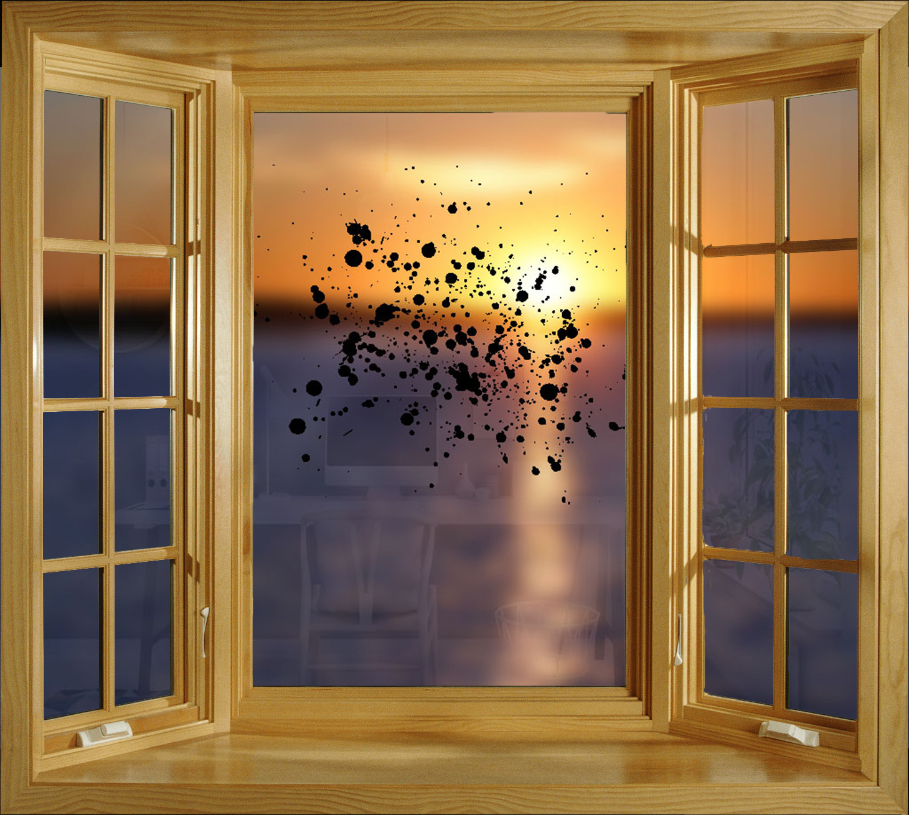
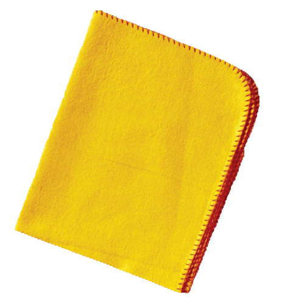

This project is about a feeling. I choose annoying as my topic since we moved to the middle of the semester. I got a bunch of homework to do and a lot of things just keep coming, I feel like I will never end up doing them. Therefore I made this website, these black dots represent my homework and stuffs, and they will keep showing until fulfilling this screen, you can’t do anything but watch it coming.
Can't you clean the window?

